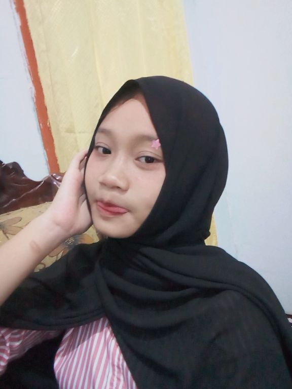

Rekayasa Perangkat Lunak
Mengenal proses merancang dan membangun perangkat lunak.
PORTOFOLIO SISWI
Halo, senang berkenalan!
Siswi XI RPL 1 SMKN 8 Jember
Sedang belajar, bertumbuh, dan merangkai ide menjadi karya digital.
01 — TENTANG SAYA

Saya Indisca Avrilia, siswi kelas XI yang sedang menempuh pendidikan di bidang Rekayasa Perangkat Lunak.
Saya tertarik mengenal lebih jauh dunia teknologi dan bagaimana sebuah ide dapat diwujudkan menjadi pengalaman digital yang bermanfaat.
02 — AREA BELAJAR
Mengenal proses merancang dan membangun perangkat lunak.
Belajar menyusun halaman web yang menarik dan mudah digunakan.
Mengeksplorasi tampilan digital yang sederhana dan nyaman.
03 — PROJECTS
Perjalanan belajar saya sedang berlangsung. Karya-karya pertama akan segera hadir di sini.
SEDANG BERTUMBUH04 — CONTACT
Terima kasih sudah berkunjung dan mengenal perjalanan belajar saya.
SENANG BISA BERBAGI CERITA